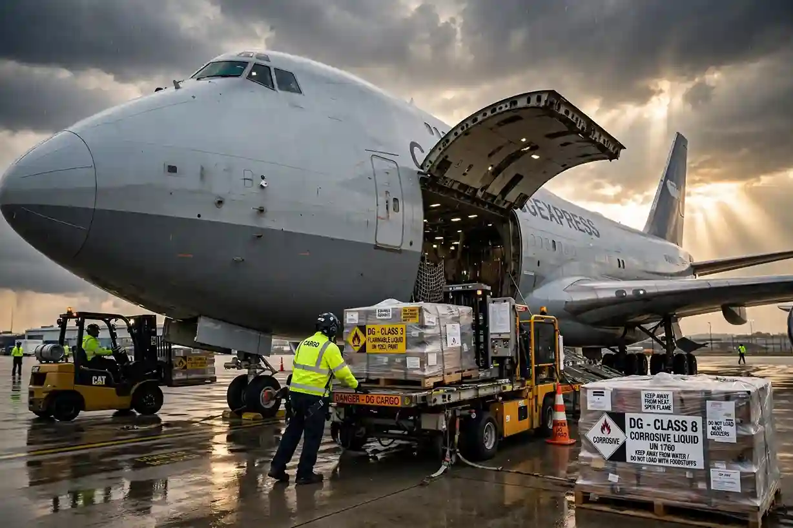

By the Skylinks Asia Aviation Team · Reviewed by our Operations Team · Updated November 2026
Quick answer: Pakistan follows the IATA Dangerous Goods Regulations (DGR), built on the ICAO Technical Instructions, with the Pakistan Civil Aviation Authority (PCAA) as the national oversight body. In practice, DG cargo into and out of Pakistan moves through a small number of IOSA-registered carriers and DG-trained ground handlers, concentrated at Jinnah International (Karachi), Allama Iqbal International (Lahore), and Islamabad International. The categories that most often trigger DG classification on Pakistani air cargo are lithium batteries (e-commerce and sporting-goods electronics), leather-industry tanning chemicals, dry ice supporting pharma cold-chain exports, and general industrial chemicals. When scheduled belly space for DG is full, delayed, or the wrong class for a given route, charter becomes the practical alternative.
Most DGR guidance online is generic — global classification rules, packing instructions, hazard classes. That is necessary but not sufficient for a shipper actually moving cargo through Pakistani airports. Two things are specific to Pakistan and worth knowing before you book: which gateways can actually accept your DG shipment, and which categories of Pakistani cargo run into DG classification more often than shippers expect. This guide covers both, then looks at when charter makes more sense than waiting on scheduled capacity.
For the underlying classification, packaging, and documentation rules themselves, see our dangerous goods charter guide — this post assumes that baseline and focuses on the Pakistan-specific layer on top of it.
Pakistan is a signatory to the Chicago Convention, so its dangerous goods framework sits on the same foundation as most of the world’s: the ICAO Technical Instructions for the Safe Transport of Dangerous Goods by Air, with airlines and freight forwarders operating to the more detailed, annually revised IATA DGR manual, since IATA’s DGR is the version airlines and ground handlers actually work from day to day.
The Pakistan Civil Aviation Authority (PCAA) is the national body responsible for enforcing this framework — issuing and overseeing the dangerous goods training approvals that shippers, freight forwarders, and ground handling staff are required to hold before they can prepare, accept, or handle DG consignments. Pakistan-based DG training providers operate under PCAA supervision, delivering the IATA Category-based courses (from Category 6 shipper courses through the higher categories required for ground handling and acceptance staff) that keep personnel current with each year’s DGR edition.
A few practical implications for shippers:
Most shippers don’t set out to ship “dangerous goods” — they ship a product, and the product happens to contain or require something that IATA classifies as DG. In Pakistan’s case, a handful of major export and import categories account for most of this.
The practical takeaway for shippers: not every airport with a runway and a cargo shed in Pakistan is set up to accept and store DG cargo. Confirm DG handling capability at both the origin and destination airport before committing to a routing, particularly for anything outside the three main gateways above.
Scheduled belly cargo remains the default for most DG shipments out of Pakistan — it’s more cost-effective and the infrastructure above exists specifically to support it. Charter becomes the more sensible option in a few recurring situations:
The aircraft itself depends on DG class and volume — a Boeing 777 freighter handles most large-volume DG across intercontinental routes, while the 747-200F nose-loader takes outsize items that can’t fit through a side door. For CAO shipments, the aircraft must be certified for the specific DG class being carried.
If you’re weighing charter for a DG shipment to or from Pakistan, get in touch with the Skylinks Asia charter desk with your UN number, packing group, quantity, and routing, and we’ll confirm operator acceptance and available capacity.
Which dangerous goods require Cargo Aircraft Only (CAO) charter and why passenger aircraft restrictions apply.
Temperature-controlled logistics, passive cooling, and dry ice handling for pharmaceutical cargo.
A guide to selecting the right freighter aircraft based on payload, volume, and route requirements.
If you’re weighing charter for a DG shipment to or from Pakistan, get in touch with the Skylinks Asia charter desk with your UN number, packing group, quantity, and routing, and we’ll confirm operator acceptance and available capacity.